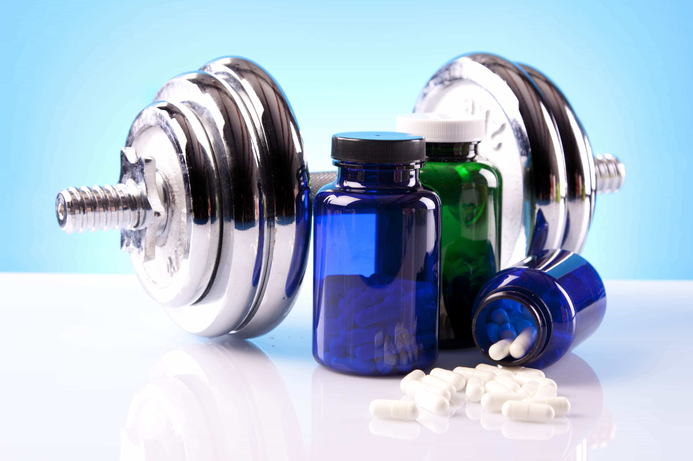
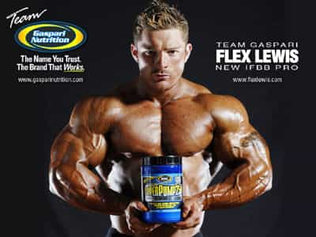

David is a strength coach and bestselling Men's Health author. You can follow him at HowToBeast.com.


I’ve taken too many supplement to count over the course of my weightlifting career– everything from pre-workout powders and BCAAs to multivitamins and fish-oils.
But over the last year I’ve taken the fitness red pill and seen the truth:
Supplements don’t do shit for you.
I’m going to break the most popular supplements down one by one, and explain why you don’t need them.

Long hailed as a cornerstone of the American diet, these pills’ actual effectiveness has been called into question recently.
In late 2013, a trio of studies conducted by researchers at Johns Hopkins, the University of Warwick, and the American College of Physicians were released in the Annals of Internal Medicine.
What did they find?
In conclusion, β-carotene, vitamin E, and possibly high doses of vitamin A supplements are harmful. Other antioxidants, folic acid and B vitamins, and multivitamin and mineral supplements are ineffective for preventing mortality or morbidity due to major chronic diseases. Although available evidence does not rule out small benefits or harms or large benefits or harms in a small subgroup of the population, we believe that the case is closed— supplementing the diet of well-nourished adults with (most) mineral or vitamin supplements has no clear benefit and might even be harmful. These vitamins should not be used for chronic disease prevention. Enough is enough.
No cloudy words or unclear results are found here. The authors of these studies firmly believe that multivitamins have been proven ineffective, and even potentially harmful to your health.
The release of these studies led to an inevitable backlash from the supplement industry and other doctors, all in support of multivitamins. And quite honestly – I’m not sure who to believe. There’s conflicting evidence out there.
The one thing I am sure of is that the best route we can all take is to eat a varied diet that includes fruits and vegetables. Yes, I sound like your grandmother, but it’s true. It’s the only way to guarantee that you’ll properly digest all of the nutrients your body needs to thrive.
This shit has been flying off the shelves of your local GNC for the past few years. At least 90% of guys ages 18-30 I know who lift weights take this stuff.
Hell, even I do from time to time.
Why? Because it makes you feel like an absolute monster. Seriously, it makes you believe that you could put the whole world on your shoulders – and then squat it four or five times. But guess what. It doesn’t do shit. I can lift just as much weight as I can with a pre-workout drink, without one. All it does it make you feel like a boss.
Read their marketing campaigns and product labels. They promote increased energy and focus, not added muscle or reduced fat. Not even more strength. And this truth boils down to one very basic fact: the main active ingredient in the vast majority of pre-workout supplements is caffeine. That’s right, the same thing that you get in a standard cup of morning joe.
From time to time you’ll see one get banned. And it’s always because it had something stronger inside: a more intense stimulant.
So next time you need that pre-workout push, grab some coffee instead. It’s cheaper, more natural, and doesn’t contain one hundred extra ingredients you’ve never heard of (and can’t even pronounce).
Better yet, just push through your fatigue and be a man. One good set of heavy squats or rows will have you buzzing like a bee.
Creatine is an organic acid, naturally synthesized by our bodies from several amino acids, that helps to supply energy to the cells of the body, especially in skeletal muscle.
It has the ability to rapidly regenerate ATP (adenosine triphosphate). This assists in sustaining high intensity muscular efforts for up to 10 seconds.
Supplementing creatine while lifting weights ensures high levels of the acid in the body, and has been shown to increase muscle mass and improve strength. It’s normal to gain 4 to 5 pounds when beginning supplementation, as creatine causes as osmotic effect that draws more water into the muscles.
But I still don’t recommend taking it. The observed strength increase is minimal, a percentage of the population has been shown to be non-responders (i.e. it doesn’t even work for everyone), and it’s just one more thing to make sure you take every day.
But it is cheap, so go for it if you really want to.

Pretty sure he took something else
I’m going to make this very clear: protein powder is a food, not a supplement.
It’s just a processed form of protein.
And I’m actually not going to tell you not to buy it.
If you have trouble consuming a sufficient level of protein (current research suggest no more than 0.8 grams of protein per day per pound body weight for strength athletes), then protein powder is an easy and relatively cheap way to get you there. But it’s not required. And getting enough protein is not difficult with normal foods.
So don’t be tricked into thinking that downing a couple scoops of protein powder after a workout is going to do something magical.
There are two supplements that I do take.
If you don’t regularly eat fatty fish (like salmon) then supplementing a few grams of fish oil every day is a good call.
Various studies have shown numerous general health benefits from supplementing fish oil (namely decreased risk of cardiovascular disease). It also has a positive effect on insulin sensitivity, making it potentially helpful for your muscle building goals.
The other pill that I pop is vitamin D3. Vitamin D3 is only synthesized by our bodies when we have a solid amount of exposure to the sun. So if you live somewhere where you’re not getting exposed to sunlight regularly, then it’s a good idea to buy and take a vitamin D3 supplement.
The dangers of incurring a vitamin D3 deficiency are numerous. It’s been shown to compromise the immune system and even lead to softening of the bones.
This is an excerpt from my new book Shredded Beast, released last week on Amazon. To get it click here.
Read More: The Top 3 Fat Loss Mistakes Guys Make